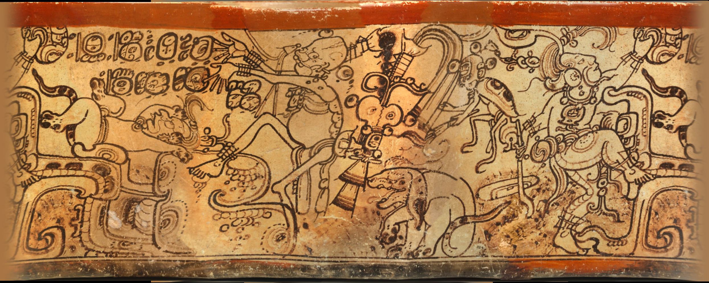
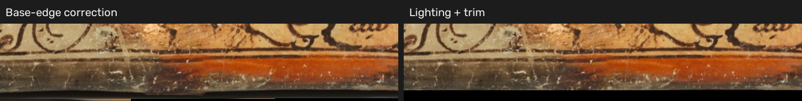
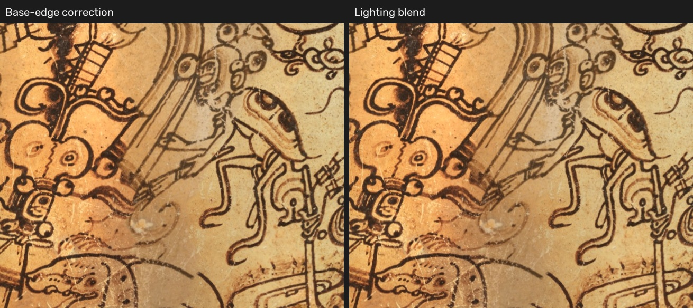

The same strips, base-edge warp, and seam paths are used on both sides. The new pass blends low-frequency color and light over 64 pixels on each side of a cut. Fine paint keeps the original narrow crossfade.

Full-height version with lighting blend


The lighting-only candidate reduced the local tone-jump proxy on seven of eight cuts. The median of the join-level 90th percentiles fell from 57.88 to 55.00 in image intensity units. The toughest cut rose slightly. A fitted per-strip exposure field gave 55.40 and was left out of the selected render.
The optional 20-row trim was chosen by eye. It removes visible background slivers and crops a small amount of the lowest dark edge in some columns. The full-height version preserves those rows. Red-band color and silhouette differences remain.
Baseline diagnostics · Lighting diagnostics · Exposure-field trial